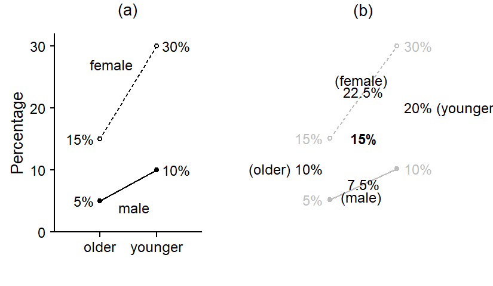
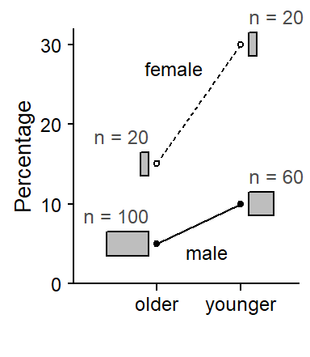

Benchmarking sample-based estimates to population values: Two broad strategies
corpus linguistics
representativeness
regression
bias
imbalance
random forests
This blog post outlines two strategies that can be used to adjust model-based data summaries for known differences between sample and target population. These involve the use of weights, which allow us to account for mismatches either at the stage of model fitting (sampling weights) or when post-processing model predictions (poststratification weights).
In many empirical research contexts, the perfect sample provides a miniature version of the target population. Simple random sampling, where each unit in the population has the same probability of being selected into the study, generates samples that hover around this goal. For a number of reasons, this ideal is rarely (if ever) achievable in corpus-linguistic work. As a result, the sample we end up with is often not directly representative of the target population.
In such cases, different statistical techniques may be used to adjust for known mismatches between sample and population. This blog post is a companion to Sönning (2025), and it describes how to implement two approaches: The use of sampling weights during model fitting, and the use of poststratification weights when post-processing model-based predictions.
I will use the same illustrative example as Sönning (2025): A hypothetical study with a binary response variable. Data are available on male and female speakers in two age groups (older and younger), and there are 200 speakers in total; each speaker contributes only one token to the data. Interest centers on how the usage rate, expressed as a percentage, varies with gender and age.
Panel (a) in Figure 1 shows the percentage of the new variant in the four subgroups. To facilitate an apparent-time interpretation, the variable age appears on the x-axis, with younger speakers appearing further to the right. We note that the percentage of the novel form increases in apparent time, and that female speakers are leading the change.
p1 <-xyplot(1~1, type ="n", xlim =c(.2, 2.8), ylim =c(0, 32),par.settings = lattice_ls, axis = axis_L,ylab ="Percentage", xlab =NULL,scales =list(x =list(at =1:2, labels =c("older", "younger"), cex = .9),y =list(at =c(0, 10, 20, 30), cex = .9)),panel =function(x,y){panel.text(x = .9, y =c(5, 15), label =c("5%", "15%"), cex=.9, adj =1)panel.text(x =2.1, y =c(10, 30), label =c("10%", "30%"), cex=.9, adj =0)panel.points(x =1:2, y =c(15, 30), pch =21, type ="l", lty ="22")panel.points(x =1:2, y =c(5, 10), pch =19, type ="l")panel.points(x =1:2, y =c(15, 30), pch =21, fill ="white", cex =1)panel.points(x =1:2, y =c(5, 10), pch =19, cex =1)panel.text(x =c(1.6, 1.2), y =c(4, 27), label =c("male", "female"), cex = .9)panel.text(x =1.5, y =36, label ="(a)") })p2 <-xyplot(1~1, type ="n", xlim =c(-.2, 3.3), ylim =c(0, 32),par.settings = lattice_ls, #axis = axis_L,ylab =NULL, xlab =NULL,scales =list(x =list(at =1:2, labels =NULL),y =list(at =c(0, 10, 20, 30), labels =NULL)),panel =function(x,y){panel.text(x = .9, y =c(5, 15), label =c("5%", "15%"), cex=.9, adj =1, col ="grey")panel.text(x =2.1, y =c(10, 30), label =c("10%", "30%"), cex=.9, adj =0, col ="grey")panel.points(x =1:2, y =c(15, 30), pch =21, type ="l", lty ="22", col ="grey")panel.points(x =1:2, y =c(5, 10), pch =19, type ="l", col ="grey")panel.points(x =1:2, y =c(15, 30), pch =21, fill ="white", col ="grey", cex =1)panel.points(x =1:2, y =c(5, 10), pch =19, col ="grey", cex =1)panel.text(x =c(1.5, 1.5), y =c(5.5, 24.5), label =c("(male) ", "(female) "), cex = .9)panel.text(x = .9, y =10, label ="(older) 10%", cex=.9, adj =1)panel.text(x =2.1, y =20, label ="20% (younger)", cex=.9, adj =0)panel.text(x =1.5, y =7.5, label ="7.5%", cex=.9)panel.text(x =1.5, y =22.5, label ="22.5%", cex=.9)panel.text(x =1.5, y =15, label ="15%", fontface ="bold", cex = .9)panel.text(x =1.5, y =36, label ="(b)") })cowplot::plot_grid(NULL, NULL, p1, p2, nrow =2, rel_widths =c(1,1.35),rel_heights =c(.1, 1))

Figure 1: Illustrative data: Percentages (a) for the four subgroups and (b) averages over various subgroups.
When summarizing these data, several quantities may be of interest. As illustrated in panel (b) of Figure 1, these include the percentage of the new form
in each of the four subgroups (as shown in panel (a), greyed out in panel (b))
for each age group, averaged over gender (older 10%, younger 20%)
for each gender, averaged over age groups (male 7.5%, female 22.5%)
in the population overall, i.e. averaging over the four subgroups (15%).
The complication I introduce into this analysis is an imbalance between male and female speakers: Overall, only 20% of the speakers in our sample are female. Further, the two age groups are not represented equally: Only 40% of the speakers are in the younger group. Figure 2 visualizes the proportionate distribution of the four subgroups, where the area of the rectangles indicates their representation in the sample.
draw figure
p1 <-xyplot(1~1, type ="n", xlim =c(0, 2.7), ylim =c(0, 32),par.settings = lattice_ls, axis = axis_L,ylab ="Percentage",xlab =NULL,scales =list(x =list(at =1:2, labels =c("older", "younger"), cex = .9),y =list(at =c(0, 10, 20, 30), cex = .9)),panel =function(x,y){panel.points(x =1:2, y =c(15, 30), pch =21, type ="l", lty ="22")panel.points(x =1:2, y =c(5, 10), pch =19, type ="l")panel.points(x =1:2, y =c(15, 30), pch =21, fill ="white", cex =1)panel.points(x =1:2, y =c(5, 10), pch =19, cex =1)panel.rect(xright = .9, xleft = .9- (20/200), ytop =16.5, ybottom =13.5, col ="grey")panel.rect(xright = .9, xleft = .9- (100/200), ytop =6.5, ybottom =3.5, col ="grey")panel.rect(xright =2.1, xleft =2.1+ (20/200), ytop =31.5, ybottom =28.5, col ="grey")panel.rect(xright =2.1, xleft =2.1+ (60/200), ytop =11.5, ybottom =8.5, col ="grey")panel.text(x =c(1.6, 1.2), y =c(4, 27), label =c("male", "female"), cex = .9)panel.text(x = .9, y =18.5, label ="n = 20", adj =1, cex = .9, col ="grey30")panel.text(x = .9, y =8.5, label ="n = 100", adj =1, cex = .9, col ="grey30")panel.text(x =2.1, y =33.5, label ="n = 20", adj =0, cex = .9, col ="grey30")panel.text(x =2.1, y =13.5, label ="n = 60", adj =0, cex = .9, col ="grey30") })print(p1, position =c(0,0,1,.95))

Figure 2: Illustrative data: Proportional representation of the four subgroups.
The distribution of the variables gender and age in our sample does not reflect that in the population of interest, which includes (nearly) the same number of male and female speakers, and also (we will assume) equal numbers of younger and older speakers.
The imbalance in our data will have no consequences for the estimation of the quantities in (i). However, once we average out a variable, we must decide how much weight to give to each of its levels. The summary percentages in panel (b) of Figure 1 (quite reasonably) assume that the two age groups and the two genders should be weighted equally. By taking a simple (i.e. unweighted) average over male and female speakers, for instance, I have manually adjusted for the lack of representativeness in our data.
In the next section, we will look at how adjustments of this type may be accomplished in a multifactorial analysis. I will primarily focus on regression and – to keep things straightforward – I will apply a linear probability model to the data. This means that they are not analyzed using logistic regression but instead using an ordinary linear regression model. This mainly serves to keep the present discussion focused on the aspect of main concern. The simplified analysis strategy does not compromise the insights that emerge, which apply to any form of regression analysis.
Table 1: Data for our illustrative (hypothetical) example.
Representation in the sample
Distribution of response variable
Age and gender
N
%
N
%
Older
Female
20
10%
3/20
15%
Male
100
50%
5/100
5%
Younger
Female
20
10%
6/20
30%
Male
60
30%
6/60
10%
Regression using sampling weights
Let us first consider the survey-sampling approach, which relies on so-called sampling weights. The sampling weight for a particular observation reflects the number of units it represents in the population. Units that are underrepresented in the sample (e.g. older female speakers) are thereby up-weighted: Their sample proportion is 10%, but their share in the population is 25%. In relative terms, each older female speaker in the sample therefore represents 2.5 speakers in the population. Older male speakers, in contrast, make up 50% (rather than 25%) of the sample, so they are down-weighted. In relative terms, then, each older male speaker represents 0.5 speakers in the population. In this way, sampling weights account for the differential representation of subgroups in the sample vs. the population. Importantly, it is the relative (rather than the absolute) size of the sampling weights that matters.
Building sampling weights into an analysis requires the use of specialized software such as the R package {survey}(Lumley 2024). In what follows, we only sketch this approach; for more information, please refer to Lumley (2010), Lohr (2021), and Lu and Lohr (2021). In a first step, the dataset is enriched with information about the sampling design, to create what is referred to as a survey design object. Our illustrative set of data is best considered as reflecting a stratified design, where speakers are sampled from within each stratum (i.e. combination of age and gender). Using the function svydesign(), we can create a survey design object with information about the sampling weights, which need to be provided as a separate column in the data table:
d_design <-svydesign(id =~1, # there are no clusters (i.e. grouping variables)strata =~ gender + age, # these are the conditions of interestweights =~ sampling_weight, # sampling weights, provided as a column in the data framedata = d)
We can then go ahead and use the function svyglm() to fit a regression model using the familiar notation. Recall that this is a linear probability model (not a logistic regression model):
For comparison, let us also fit a standard linear regression model with the function lm(), which does not take into account sampling weights:
m <-lm( response ~ gender * age, data = d)
Characteristic
Beta
SE
p-value
gender = male
-0.10
0.072
0.166
age = younger
0.15
0.093
0.108
gender = male * age = younger
-0.10
0.105
0.340
Note that the two models return identical coefficient estimates, with the standard errors produced by svyglm() being somewhat larger.
Let us now turn to our model-based estimates. We can obtain the population-level percentage – listed as (iv) above – and its standard error with the following code, which returns an estimate of 15% (the same as in panel (b) of Figure 1) with a standard error of 3.5:
svymean(~ response, d_design)
mean SE
response 0.15 0.0352
To get estimates for subpopulations, we first form the relevant subsets:
d_old <-subset(d_design, age =="old")d_young <-subset(d_design, age =="young")d_male <-subset(d_design, gender =="male")d_female <-subset(d_design, gender =="female")
Then we use the function svymean() to get estimates (and standard errors) of the percentages we are interested in:
These also correspond to the ones in in panel (b) of Figure 1:
older 10% (4.2),
younger 20% (5.6)
male 7.5% (2.2)
female 22.5% (6.7)
The sampling weights we have specified and added to the survey design object ensure that the four subgroups in our data are treated even-handedly, in line with their assumed representation in the target population.
Poststratification of regression results
Two popular tools for forming model-based predictions are the packages {effects}(Fox and Weisberg 2019) and {marginaleffects}(Arel-Bundock, Greifer, and Heiss 2024). Using the {effects} package, and relying on the default settings, we get the following estimates:
effects::effect("age", mod = m)
NOTE: age is not a high-order term in the model
age effect
age
old young
0.07 0.14
These estimates, 7% (older) and 14% (younger), are quite far from the ones we saw in panel (b) of Figure 1. The reason for the discrepancy is that these are weighted means, with male and female speakers being weighted in proportion to their overall representation in the data (20% female, 80% male). In other words, the model-based predictions rely on the in-sample distribution of the variable gender to decide on the importance of each subgroup. This is what the {effects} package returns by default.
Next, we use {marginaleffects}. When looking for a way to aggregate model-based predictions, i.e. to form average predictions using the function avg_predictions(), the following code is the first suggestion we come across on the wonderful website accompanying the package:
marginaleffects::avg_predictions( m, by ="age")
age Estimate Std. Error z Pr(>|z|) S 2.5 % 97.5 %
old 0.0667 0.0268 2.49 0.0129 6.3 0.0141 0.119
young 0.1500 0.0328 4.57 <0.001 17.6 0.0857 0.214
Type: response
This returns yet another set of estimates, which again miss the population quantities by a considerable margin: 6.7% for male and 15% for female speakers. These are also weighted means, but now male and female speakers are weighted in proportion to their representation with each age group. This means that different weighting schemes are applied for the older and younger subgroup (older: 1/6 female; younger: 1/4 female; see Table 1).
The {marginaleffects} package, however, is very flexible and allows us to change this default behavior to obtain average percentages with the intended meaning. This can be accomplished with the help of the newdata argument. If we merely supply "balanced" to this argument, the function gives equal weight to the levels of all categorical variables in the data. And this returns estimates with the intended meaning:
marginaleffects::avg_predictions( m, newdata ="balanced",by ="age")
age Estimate Std. Error z Pr(>|z|) S 2.5 % 97.5 %
old 0.1 0.0360 2.78 0.00543 7.5 0.0295 0.170
young 0.2 0.0379 5.28 < 0.001 22.9 0.1257 0.274
Type: response
For more flexibility, the newdata argument can also take a custom data frame that includes only those variables we wish to treat as-balanced; for more background, see Section 5.3 “Aggregation” on the package website.
The important take-away message here is that the default behavior of software packages that calculate and average model-based predictions may not implement the weighting scheme preferred by the researcher.
A look at random-forest models
Let us also briefly consider random-forest models, which are becoming increasingly popular in corpus-based work (see Sönning 2026). It turns out that these models are not immune to this issue. The interpretation of a random-forest model may also rely on average predictions (see chapter 7 in Gries 2021). A popular strategy is the use of partial dependence plots (Friedman 2001), which are implemented in the R package {pdp}(Greenwell 2017).
This produces average percentages of 7.7 for older speakers and 13.2 for younger speakers. We see that, similar to the default behavior of the {effects} package, partial dependence scores are also weighted based on the overall distribution of variables in the sample.
The {predictiveMargins} package (Grafmiller and Sönning 2022) allows us to modify the weighting scheme and thereby obtain the desired equal-handed treatment of male and female speakers. I will illustrate how to do this in a future blog post.
References
Arel-Bundock, Vincent, Noah Greifer, and Andrew Heiss. 2024. “How to Interpret Statistical Models Using marginaleffects for R and Python.”Journal of Statistical Software 111 (9): 1–32. https://doi.org/10.18637/jss.v111.i09.
Friedman, Jerome H. 2001. “Greedy Function Approximation: A Gradient Boosting Machine.”The Annals of Statistics 29 (5). https://doi.org/10.1214/aos/1013203451.
Greenwell, Brandon M. 2017. “Pdp: An R Package for Constructing Partial Dependence Plots.”The R Journal 9 (1): 421–36. https://doi.org/10.32614/RJ-2017-016.
Hothorn, Torsten, Kurt Hornik, and Achim Zeileis. 2006. “Unbiased Recursive Partitioning: A Conditional Inference Framework.”Journal of Computational and Graphical Statistics 15 (3): 651–74. https://doi.org/10.1198/106186006X133933.
![]()